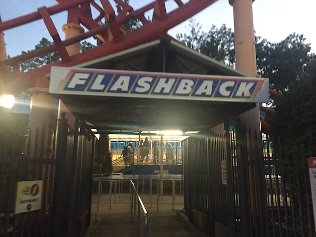
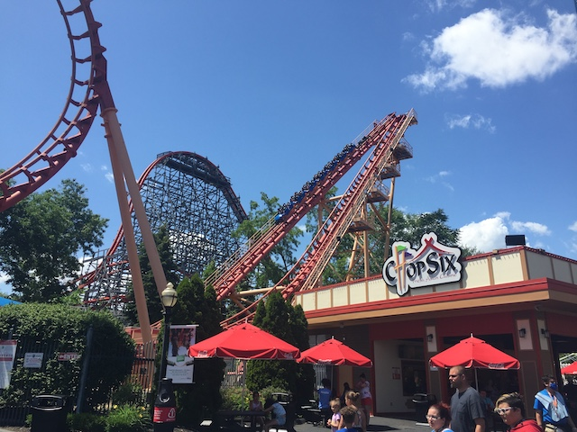
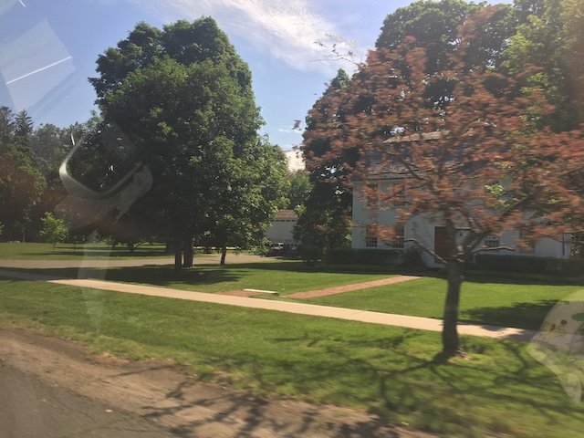
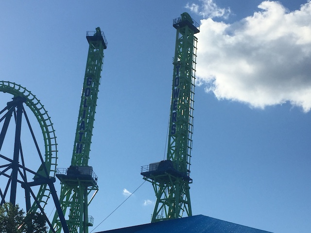
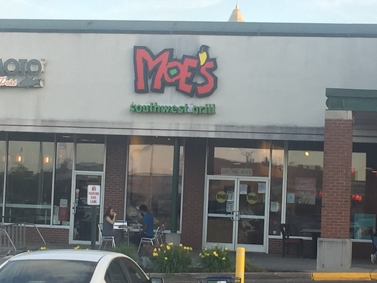

| |
East Coast Trip 2021
Lake Compounce Six Flags New England New York City American Dream Coney Island Six Flags Great Adventure
Casino Pier & Playland's Castaway Cove Dorney Park Cedar Point Kings Island Columbus Zoo & Waldameer Kennywood
Idlewild & Lakemont Park Hersheypark Knoebels
 All right. We had a lot of fun at Lake Compounce, but hey. We have more fun coming up ahead for the day.
All right. We had a lot of fun at Lake Compounce, but hey. We have more fun coming up ahead for the day.
We made it to Agawam, Massachussettes. I wonder what we could be doing here?
In case you didn't already get it (You should've. It's f*cking obvious), we're here for Six Flags New England.
We could've never bought all those S&S Free Spins in bulk without your help. =P
So one of the perks of having the Diamond Elite Membership (which Scott & Steve have) is that you get free Skip the Line passes with each visit. And trust me, this was SUPER helpful for our visit to Six Flags New England.
 Yeah. It's no shock that we'd go straight here since...this wasn't here on my last visit and....it's a freaking RMC.
Yeah. It's no shock that we'd go straight here since...this wasn't here on my last visit and....it's a freaking RMC.
Just in case you thought we were still in Conneticuit.
I don't remember, but was the station for the original Cyclone this cramped? Cause this thing induces claustrophobia and is a pain in the ass to move in here.
 So Wicked Cyclone is a solid RMC. Not my favorite, but definately in the upper half. It still kicks ass and is just a ton of fun.
So Wicked Cyclone is a solid RMC. Not my favorite, but definately in the upper half. It still kicks ass and is just a ton of fun.
 Yeah. It may not be Steel Vengeance, but there are still a lot of crazy elements and other moments of RMC goodness to savor.
Yeah. It may not be Steel Vengeance, but there are still a lot of crazy elements and other moments of RMC goodness to savor.
And of course, it's not an RMC without some really strong ejector air.
So Wicked Cyclone is great and all, but is it the new star attraction of Six Flags New England? Gonna have to reride this old classic and find out.
*Sigh* One downside of this visit is.....the park was MOBBED both days that we visited. Not thrilled about having to wait an hour for Superman.
Probably not a smart thing of you to have that many enemies Superman. It might cause problems later. Have you ever tried diplomacy? ;)
That's enough of that. Time to finally get on Superman.
I may have NO LOVE for the Golden Ticket Awards and feel like it's just a popularity contest between this, Millenium Force, and now Fury 325, and that the entire organization is way too Americentric (Seriously, go do some international travel. If I can manage to make it to Europe & Japan, then I know you can Golden Tickets Voters). But they're not wrong in admitting that Superman really is one of the best coasters ever.
I know a lot of enthusiasts have become jaded on this ride and have called it overrated, and yeah, I can think of better coasters. But this ride still is incredible and kicks a ton of ass.
It still has a ton of great ejector air, especially on the "It Happens" Hill (Still my favorite part of the ride).
But on top of the airtime, the whole spaghetti bowl mess in the second half also gives it a lot of great laterals and really gives it some spice.
So yeah. It's really close, but I'm still gonna have to go with Superman as my favorite ride at Six Flags New England.
Oh, and just in case you didn't know, Bizarro is gone. It reverted back to Superman. Honestly, this made a ton of sense. The Bizarro gimmick quickly grew old, and it just felt tacky and out of place. Smart move on Six Flags New England.
Well, we got all of the star attractions out of the way. Wanna just knock out the other low capacity credits since...we're here with two people who've never visited the park and....might as well start out with the Spinner.
 So while we were standing in line for Pandemonium, one person was selling skip the line passes. Alarm bells go off in my head thinking that this was a scam, but Steve got them, and sure enough, they worked. I was initially thinking that someone was gonna get fired, but apparently they were doing this to help clear out the line so that employees don't have to stay too long. Honestly, I've NEVER found staying to finish going through the guests in line to be a big deal from when I worked at SFMM (Holy Crap! That was so long ago! It doesn't feel like it lol). But hey. Intersting tactic and I do appreciate not having to wait that long for Pandemonium.
So while we were standing in line for Pandemonium, one person was selling skip the line passes. Alarm bells go off in my head thinking that this was a scam, but Steve got them, and sure enough, they worked. I was initially thinking that someone was gonna get fired, but apparently they were doing this to help clear out the line so that employees don't have to stay too long. Honestly, I've NEVER found staying to finish going through the guests in line to be a big deal from when I worked at SFMM (Holy Crap! That was so long ago! It doesn't feel like it lol). But hey. Intersting tactic and I do appreciate not having to wait that long for Pandemonium.
So I know I really praised this as being one of the better spinners last time. Not sure if I've changed my tune from riding some really great spinning coasters, but nope.
Now this isn't me sh*tting on Pandemonium. I still really had a lot of fun on it. But it wasn't any better than the other Pandeomonium rides at the other Six Flags parks.
 And hey, not having to wait and skip a line does make the ride more fun. Just saying. ;)
And hey, not having to wait and skip a line does make the ride more fun. Just saying. ;)

Hey look! There's still a few minutes before the park closes! Get in line for another coaster so that saves us a lot of time!

This totally makes up for Zoomerang being closed at Lake Compounce today. Looks like we'll be riding a Boomerang today after all. =P
 Not sure if it's because the last Boomerang I rode was the one at Knotts right before it closed (Hard to believe I've gone this long without riding one), but this thing was actually pretty fun. Nah, I entirely blame some random girl freaking out behind me. That's what made the ride. >=)
Not sure if it's because the last Boomerang I rode was the one at Knotts right before it closed (Hard to believe I've gone this long without riding one), but this thing was actually pretty fun. Nah, I entirely blame some random girl freaking out behind me. That's what made the ride. >=)
Though I'm honestly surprised that this ride is still here. Though we'll discuss that in further detail later.
 I gotta say. Thanks for a fun evening Six Flags New England. Really happy I got on both your star attractions (including the new-for-me RMC) and look foreward to coming back for a full day tomorrow.
I gotta say. Thanks for a fun evening Six Flags New England. Really happy I got on both your star attractions (including the new-for-me RMC) and look foreward to coming back for a full day tomorrow.
So we wound up doing Taco Bell for dinner, and as someone who eats a lot of the stuff (I really should stop. But it's cheap and tasty. *Sigh*), this was easily the worst. They missed part of my order (as well as other people's) and were stingy on the sauce. Not impressed. Though I somehow I doubt I'll ever be back at this random Taco Bell in Conneticuit ever again.

Good morning random building that gives the surrounding area a lot more charm and flavor.
At one point, we were considering hitting up the waterpark if we got everything done in our half-day yesterday and had time. But with the way these crowds are, *hyena laugh* F*CK NO!!!
Sorry Typhoon. You are fun, but just not worth it.
First ride of the day, and....meh. Not great, but I can think of so many worse rides.
Hey, while nothing special. I'll take this over that peice of sh*t at Lake Compounce any day of the week.
Hmm. I know Wicked Cyclone was new for me. But I feel like there's another new credit for me. Something they built since my last visit in 2011 and didn't get on last night.
Oh yeah. Six Flags plopped yet another S&S Free Spin here. Time to get this credit.
Sad (but not surprised) to report that Joker is far more like Batman @ SFDK and not like Arashi. LAME!!! =(
Sure, I may want the crazy flipping of Arashi (Seriously, that ride makes an S&S Free Spin crack my Top 30), but I still had some fun on Joker.
 Oh yeah. I keep forgetting that this park has a B&M Floorless Coaster. Better check that out.
Oh yeah. I keep forgetting that this park has a B&M Floorless Coaster. Better check that out.
Now THESE are the crowds I want to see at Six Flags New England. Sadly, this is just classic RCT Syndrome and the park will soon be mobbed again later today.
 Oh yeah. I just remembered why I tend to forget about this ride.
Oh yeah. I just remembered why I tend to forget about this ride.
 It has a decent layout, and looks like it can really pack a punch, like a Floorless Batman: the Ride. But for some reason, it just feels really forceless.
It has a decent layout, and looks like it can really pack a punch, like a Floorless Batman: the Ride. But for some reason, it just feels really forceless.
 I know I've ridden many more floorless coasters since my last visit, but this is still the weakest original floorless coaster, only beating out the Stand-Up to Floorless Conversions.
I know I've ridden many more floorless coasters since my last visit, but this is still the weakest original floorless coaster, only beating out the Stand-Up to Floorless Conversions.
 Though at least we rode it in the morning, didn't have to wait, and as a result, it slightly grew on me. But still not impressed with the ride.
Though at least we rode it in the morning, didn't have to wait, and as a result, it slightly grew on me. But still not impressed with the ride.
Still has more whip than Silver Bullet's pathetic excuse for a heartline spin.
 It's a fun ride, but at a park with both Superman and Wicked Cyclone, I'm not gonna fault you for having this slip your mind.
It's a fun ride, but at a park with both Superman and Wicked Cyclone, I'm not gonna fault you for having this slip your mind.
 Wait. What's this? I don't remember this ride.
Wait. What's this? I don't remember this ride.
Oh wait. It's just Mind Eraser. Just with the retheme and the new trains. Hmm. Looking foreward to seeing how the new trains improve the ride.
HOLY SH*T!!! This ride got WORSE since the makeover and the new trains. I did NOT expect to find that out.
I think between the horrible things I've read about Hades 360, Wildcat nearly giving me a spinal adjustment yesterday with its new Millenium Flyers, and now this, it's safe to officially declare that shiny new trains don't do JACK-SH*T for a rides maintenence and that just replacing the trains alone is NOT gonna make your ride better. Just a little tip parks.
It wouldn't be a Six Flags park if they didn't have some sort of D.C Universe area.
Not sure if this is new or if it's just something I ignored last time, but regardless, I've heard a lot of good things about Cyborg.
The ride itself may be nothing special, but the theming made it so much more fun than it would normally be. Never thought I'd be saying that about a ride from a Six Flags park. I'm impressed Six Flags New England.
Sorry Scott & Steve. Guess you'll be missing this credit as well.
 Finally! After being screwed out of the giant starflyers multiple times, whether that be because of horrible operations or it being closed due to us climbing it, I FINALLY get to ride one of these monstrosities.
Finally! After being screwed out of the giant starflyers multiple times, whether that be because of horrible operations or it being closed due to us climbing it, I FINALLY get to ride one of these monstrosities.
 It kind of reminded me of the rides on the Stratosphere Tower or the Plane on a Stick at Tibidabo. Really fun ride, but if you have zero fear of heights, then it can't scare you. Still is cool to be that high up by what feels like playground chains. Also, the view, while not terrible, could be better (Forest plus the river is nice, but it's no Copenhagen).
It kind of reminded me of the rides on the Stratosphere Tower or the Plane on a Stick at Tibidabo. Really fun ride, but if you have zero fear of heights, then it can't scare you. Still is cool to be that high up by what feels like playground chains. Also, the view, while not terrible, could be better (Forest plus the river is nice, but it's no Copenhagen).

Oh hey DejaVu. It's been a long time. And....I know things have NOT worked out well for you here.
 I know I was saying all along that moving DejaVu here was a HORRIBLE idea. And....I was right. Granted, for different reasons than I was initially expecting. But still! Told you so! Take that 2011 Coaster Enthusiasts!
I know I was saying all along that moving DejaVu here was a HORRIBLE idea. And....I was right. Granted, for different reasons than I was initially expecting. But still! Told you so! Take that 2011 Coaster Enthusiasts!
 So when DejaVu left SFMM, I did a funeral update for it since I really liked it and was unhappy about the decision. In said update, I did an in-update Top 5 List on why this decision was dumb. And I figured that 10 years later, I would reflect on that and see how my 2011 predictions on this decision held up.
So when DejaVu left SFMM, I did a funeral update for it since I really liked it and was unhappy about the decision. In said update, I did an in-update Top 5 List on why this decision was dumb. And I figured that 10 years later, I would reflect on that and see how my 2011 predictions on this decision held up.
#5. DejaVu was popular. Now I know a lot of people have been saying this and all the other enthusiasts reply with "No it wasn't!!!! It just had horrible capacity!!!!" And while yes, that is true, DejaVu's capicity did indeed suck and the operations were slow. But it still was popular. Now granted, it wasn't popular as in one of Six Flags Magic Mountains star attractions like X2, Tatsu, and Goliath, the parks most popular rides. But it still was popular. People did ride it, it wasn't an empty abandoned ride that only had a long line created solely due to awful capacity. People did ride it and it was liked. While I know there is a certain group overreacting and saying several stupid remarks about this move, it's destined to fail, but it does prove that people did like the ride. (Ironic that I posted this number and showed a photo of the empty line. This is just a result from typical RCT Syndrome. Goliath has the same effect.)
I think this was generally true. I don't remember DejaVu ever being abandoned or totally unpopular. Remember always having to use the Single Riders Line to ride it #Nostalgia. Though this didn't really have much of an effect on the decision at all.
#4. Six Flags Magic Mountain gave up the roller coaster record. Now unlike many people, I don't consider this to be a bad thing. While it does show that Six Flags Magic Mountain obviously doesn't care about the record, I actually find that to be a good thing. By not focusing on the record, the park can spend the money on other things, like their new 2012 edition, Lex Luthor. HOLY SHIT!!!! IT LOOKS SO GOOD!!!! But I still find it strange that the park simply doesn't care about the record, especially since you can use that as a great marketing technique. But whatever. We don't need the record. And Lex Luthor is MORE than enough for advertising. So take back your stupid record Cedar Point. We don't need it. So while this doesn't qualify as a bad reason, it is a strange thing to consider, but whatever. There are plenty of other things wrong with this decision such as...
LMFAO!!! I remember the whole SFMM vs Cedar Point Feud. I don't have to tell my past self that the record is stupid and pointless since....19 year old Kevin already knew that. But I do find the reminder that this used to be a thing amusing since it's crystal clear that neither park cares anymore. Plus, I'm pretty sure Energylandia is gonna steal that record from both since they actually seem to care and build more coasters than a kid playing RCT (Gotta get out there someday).
#3. The Maintenence Argument makes no sense. Now a lot of enthusiasts are also saying that Six Flags Magic Mountain is getting rid of DejaVu because it's a bitch to maintain. And yes, DejaVu was a bitch to maintain. And this argument would make sense. IF IT WAS GETTING SCRAPPED!!!!! But it's not (luckily). It's getting shipped to Six Flags New England. So the maintenence problems doesn't make much sense. Why would they move a ride that's giving one Six Flags park nightmares to another Six Flags park just to give them maintenence nightmares. Maybe they just think that the Six Flags New England Maintenence Crew is just perfect and can take on DejaVu. I've never met SFNE's Maintenence Crew, but from working at Six Flags Magic Mountain, I know that the maintenence crew at SFMM does a fantastic job keeping the rides in check. (True, they aren't nearly as good as the Disney or Universal Maintence crews. But they still do a really good job dammit!!!) So Six Flags New England has a pretty high bar set for them if they think they can take on something that SFMM couldn't handle.
This just flat out aged poorly. I think it's pretty clear that SFNE's maintenence team f*cked this up REALLY badly. Though it didn't have to be this way. Seriously, go look at Silverwood.
#2. SIX FLAGS NEW ENGLAND ALREADY HAS A BOOMERANG!!!!!!!! I'd just like to say that again to remind Six Flags. SIX FLAGS NEW ENGLAND ALREADY HAS A BOOMERANG!!!!! This is definetly the one problem with this move that everyone in the roller coaster community has pointed out for obvious reasons. In case you didn't know, I'll fill you in. Six Flags New England does indeed have a normal Vekoma Boomerang. It's named Flashback and it's a fairly rough and lame Boomerang. A lot of enthusiasts consider that ever since La Ronde got an SLC when they already had a Batman Clone, that it simply doesn't matter. And while I do agree that that's a lame move, it's nowhere near as stupid as this!!!! (And do you honestly expect good decisions from La Ronde?) An SLC and Batman may be similar, but DejaVu and a Boomerang are pretty much THE SAME FUCKING RIDE!!!!!! Now obviously, DejaVu is much better due to it's monster size and 90 degree lifthills, but aside from that, oh, and being suspended from the track, SAME FUCKING RIDE!!!!! Now if Six Flags New England decided just scrap Flashback, plop DejaVu there, and call it a new makeover, making a lame old boomerang NEW, EXCITING, MONSTER SIZED, AND VERTICALLY BADASS!!!!! That'd be a smart move considering how well all the other makeovers have gone for Six Flags. That'd be awesome. But taking out their shoot the chutes and calling it it's own new ride, expecting it to compete with Flashback. LAME!!!!!! Though really, when 2012 comes around and DejaVu opens in Six Flags New England as Goliath (lame name BTW), everyones gonna ride Goliath since it's by far the better boomerang and Flashback will be emptier than a nuns sex life. And the final reason may just be my opinion, but...
I stand by EVERY word of this in the "This is a f*cking stupid move" part. However, it's perfectly clear that the "This would be popular and totally replace Flashback" prediction, I was completely 100% wrong on. Though I do think this mostly came down to....Six Flags New England ROYALLY F*CKED THIS UP BY ADDING THOSE HORRENDOUS PREMIER TRAINS!!! I do think it would've played out how I predicted if it kept the original trains. Though it's entirely pointless to predict since....it sadly became scrap metal between my visit and this update being posted.
#1. Six Flags New England deserves better. And I'm not just saying this because they already have Flashback. Even if they didn't have Flashback, I'd still say that they deserve better than DejaVu. I just visited Six Flags New England this summer, and I really liked it. It was a really really nice park and definetly one of the better parks in the Six Flags chain. Now I really really like DejaVu and do consider it to be one of the most underrated rides in the coaster community, but I still feel that Six Flags New England deserves better. During the last few years, all of the new editions that Six Flags New England got were just the hand me downs from all of the other Six Flags parks. They got Swat and Blizzard River from Six Flags Astroworld in 2006, was gonna get Dark Knight in 2008, but cancelled at the last minute sending it to Six Flags Mexico, redid Superman into Bizarro in 2009, and their new 2011 coaster was Gotham City Gauntlet, which was just a wild mouse that was sent from Six Flags Kentucky Kingdom. Now look at all the new Six Flags editions for 2012. Six Flags Great America is getting a crazy looking B&M Wingrider. Six Flags Magic Mountain is getting the worlds tallest drop tower on the side of Superman. Six Flags Discovory Kingdom is getting some really weird Sky-Loop type attraction that looks awesome (I'm really looking foreword to riding that and Lex Luthor @ SFMM in 2012). Six Flags New England is getting DejaVu from SFMM. Yet another hand me down. I really like DejaVu and all, and I'm happy that all of Six Flags New Englands new editions found a nice home at SFNE instead of being scrapped, but I really think Six Flags New England deserves something unique of their own. The park really seems like it's getting turned into the new Astroworld.
Don't worry 2019 Kevin. They would a couple years later, get Wicked Cyclone, which totally KICKS ASS, and is EXACTLY what Six Flags New England needed. Though I do find it amusing that 2011 Kevin was gushing over SFDK's Sky Rocket and thinking it was some unique crazy funky ride when it's basically the modern equivelant of a Boomerang today.
 I know people kept repeatedly saying that the ride went to complete sh*t thanks to the new trains, but I was still hoping to try it out for myself. See if it was as bad as people were claiming. Plus, it got scrapped, which....as someone who still REALLY finds the Giant Inverted Boomerangs underrated, I'm really bummed about. And pissed at SFNE for ruining this ride. Though, at least you can still ride clones of this ride. Aftershock is still running at Silverwood. And there are more clones of this ride in Spain, China, and Rus....(God damn it).
I know people kept repeatedly saying that the ride went to complete sh*t thanks to the new trains, but I was still hoping to try it out for myself. See if it was as bad as people were claiming. Plus, it got scrapped, which....as someone who still REALLY finds the Giant Inverted Boomerangs underrated, I'm really bummed about. And pissed at SFNE for ruining this ride. Though, at least you can still ride clones of this ride. Aftershock is still running at Silverwood. And there are more clones of this ride in Spain, China, and Rus....(God damn it).
Getting flashbacks of Six Flags Discovory Kingdom's Kingdom Fries. But hey. Fries are always better with bacon, cheese, and ranch. ;)
Yeah. Lunch was nothing special. Standard amusement park food.
Oh yeah. I forgot that this place has one of the few Vekoma Mad Houses in America. We should hit that.
You know, it's funny. In 2011, I was WOWED by these Vekoma Mad Houses and really loved them. But after riding a ton of them in Europe one year later, they lost a lot of the initial WOW factor. Still really fun rides, but....yeah. The illusion cracked after enough rides.
I never realized that the initial Huss Frisbees are starting to become a dying breed. I know the high maintenence costs plus the emergence of Giant Frisbees (this park now has one) makes removing these in favor of those make complete logical sense. They are better rides, easier to market, and maintain. But the original Huss Frisbees are fun rides too. Wish I made time to ride this. Oh well.
Oh yeah. Forgot about that enterprise they built. Fun rides, but not worth waiting in that line.
 Clearly your clientele don't give a sh*t.
Clearly your clientele don't give a sh*t.
Enough of all the other rides! We gotta get more crazy ejector air in! Gotta have more Superman!
Once again, the notion that this trip keeps showcasing all of the best coasters in America gets proven right once again with Superman (and Wicked Cyclone too).
Really hope more hyper coasters like this get built soon.
*Sigh* Unfortunately, when we were just about to get on, there was some sort of issue with the lap bar in our row, which resulted in us having to wait an extra 15 minutes. Ugh. Not happy about that when I already have to wait a while for this (at least Superman is the only ride here that we really have to wait for).
What's that I see? Looks like you'll be getting your credit today after all.
*gasp* Things really are slippery when wet!? I thought that was just a Bon Jovi album!
HOLY SH*T!!! This ride did NOT age well!
This may have been fun 10 years ago, but now, it is really rough, kind of sluggish, and among the worst Wild Mice. Really dissapointed with this coaster (as weird as that may sound since it's just a Wild Mouse).
 And of course, we have to get more rides on Wicked Cyclone. We wouldn't go all of Day 2 without getting on one of SFNE's best rides.
And of course, we have to get more rides on Wicked Cyclone. We wouldn't go all of Day 2 without getting on one of SFNE's best rides.
 One interesting fact worth noting about Wicked Cyclone. It's the one RMC (that I've ridden) with a steep lifthill. I know it was done to save space, but it does make the lifthill actually mildly fun. OK, it's not as freaky as the purely vertical lifts, but steeper is always better when it comes to lifthills.
One interesting fact worth noting about Wicked Cyclone. It's the one RMC (that I've ridden) with a steep lifthill. I know it was done to save space, but it does make the lifthill actually mildly fun. OK, it's not as freaky as the purely vertical lifts, but steeper is always better when it comes to lifthills.
Yeah, Wicked Cyclone may be on the small side, but this is another really strong example of "Don't judge a ride by its size", cause this thing really kicks ass.
 Another positive for Wicked Cyclone is that this ride is fairly long. It just keeps going and has fun element after fun element, which is always appreciated on an RMC.
Another positive for Wicked Cyclone is that this ride is fairly long. It just keeps going and has fun element after fun element, which is always appreciated on an RMC.
 If you want more details on my thoughts on Wicked Cyclone, check out my Wicked Cyclone Review that was just published with this update.
If you want more details on my thoughts on Wicked Cyclone, check out my Wicked Cyclone Review that was just published with this update.
Well, so long Six Flags New England. You're still one of the better Six Flags parks and I had a lot of fun visiting.
Come on! This rental car is due back at JFK in a few hours! We gotta hurry!
Hey. Does anyone have any suggestions on where we should go next?

We were gonna stop at Moes since it may be just another Chipotle clone, but it's something we don't have on the West Coast. But that was closed. So we had to get dinner elsewhere (ironically at Chipotle).
Yep. We dropped our first rental car and will be using public transportation during our time in New York City. Not only because driving here is a nightmare...
But public transportation here is actually semi-decent! I know after experiencing Japan's AMAZING public transportation, I've become spoiled and jaded at most other places' public transportation. But this is still among the best in America (we really suck at the whole train thing. High-Speed rail please! I want an American Shinkansen damn it!), but at least public transporation here WORKS!!! And compared to L.A's joke of public transportation, this is great. And with the current oil crisis and the INSANITY of current gas prices, we need public transportation more than ever (let alone the climate change reasons).
Ooh. Pretty NYC artwork on the subway.
You know, when they said the streets are paved with gold in New York, this isn't what I had in mind. ;)
We made it to our hotel, and...one nice thing about staying at Double Tree hotels. Complimentary Cookies. =)
New York City
Home
|